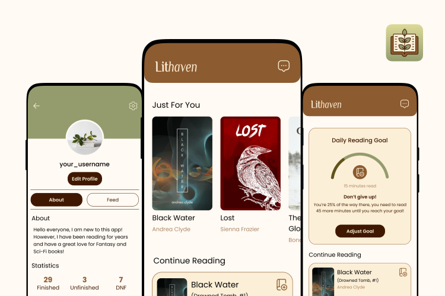
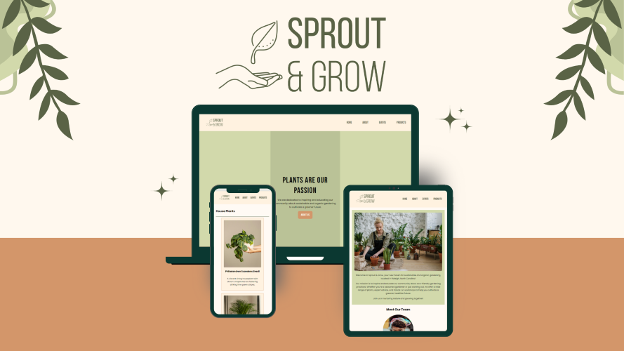

Lachlan Allen
Front-End Development Student
I completed my Bachelor's degree in Computer Science with a concentration in Human-Computer Interaction at UNC Charlotte in May 2024. Throughout my studies, I achieved a GPA of 3.71, earning a position on the Chancellor's List. My technical skill set includes programming languages such as Java, JavaScript, and Python, and I am proficient in HTML5, CSS3, and popular front-end frameworks like React.js. I am continuing to develop these skills while I complete a certificate in Front-end Development at Wake Technical Community College.
I have practical experience in web application development, acquired through various projects undertaken during my time as a student at UNC Charlotte. During these projects, I engaged in the User Experience design process and front-end development, utilizing tools such as Figma, React.js, and Git. Collaborating with fellow students on many of these projects demonstrated my strong communication, coordination, and successful project delivery within specified deadlines.
Featured Projects
View selected projects below.
Lithaven - Book Cataloging App
Lithaven is an app designed to support readers, of all ages, in their journey to find and read new books. Lithaven is a book cataloging application where users can search, save, review, and organize books they have read or are interested in reading. Users will also be able to track their reading progress and set reading goals for themselves. Lithaven aims to create a community where users can find other like-minded readers and engage in book discussions.
View projectSprout & Grow Website
Developed a dynamic, five-page website for Sprout & Grow, a fictional client passionate about sustainable gardening. The site includes a Home, About, Products, Events, and Event Registration page.
View projectWork Experience
Instructional Assistant
University of North Carolina at Charlotte
May 2023 - May 2024
Supported teachers in the classroom by helping with daily management tasks, grading assignments, and maintaining a positive and productive learning environment.
- Effectively managed a rigorous academic schedule while fulfilling responsibilities such as grading and creating assignments.
- Maintained open lines of communication with students and faculty, promptly responding to emails and inquiries to address concerns and provide academic assistance.
- Held regular office hours to provide individual academic support to students, further enhancing their understanding of course material.
Education
Wake Technical Community College - Wake County, NC
Front-End Development Certificate, 2024-2025
The University of North Carolina at Charlotte - Charlotte
Bachelor of Computer Science, 2022-2024
Guilford Technical Community College - Jamestown
Associate of Science, 2018-2022